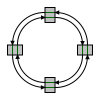

Introduction
For big deep learning models and datasets, training on a single GPU (or TPU or CPU) may not be fast enough. For example, according to NVIDIA's Megatron-LM code base, training BERT Large takes 3 days on 64 Tesla V100 GPUs. Assuming linear scaling, this would mean that training on a single GPU would have taken 192 days, or more than 6 months! Of course, scaling is hardly ever perfectly linear, but even if we assume 50% efficiency, that would have still meant 3 months instead of 3 days. Scaling is what makes certain problems feasible that used not to be viable with smaller compute resources. Big O of a task may not change, but scaling up the processing of a problem with a given complexity can make a difference.
The benefit of mini-batch stochastic gradient descent (SGD) and related optimization algorithms is that they take a few examples a time and run the forward and backward passes with enough data at once to keep the hardware busy. For example, in case of the GPU, we want at least have enough data to exploit data parallelism for bandwidth-bound layers, and to get both data parallelism and data reuse for compute-bound operations such as matrix multiplication or convolution. The same logic applies to multi-GPU and multi-node processing - given a per device batch size N and K devices, we could simply sample a larger batch KN and still have N examples to work with per device. Typically, as the batch size grows, we can increase the learning rate and take fewer steps over the data, with each step contributing to a larger update of the weights. This actually doesn't always work well without various heuristics (e.g. 1, 2, 3), but with the heuristics, we can scale training and converge much faster on many GPUs/TPUs/CPUs or many multi-device nodes.
Training on multiple devices requires communication between devices, so let's now talk about communication points.
Deep learning training communication patterns
The forward pass is simple - it's an embarrassingly parallel problem, meaning that each device does its own work and there's no need for communication. The only thing that might need to be communicated in theory is the random seed, since different devices or nodes need to read different chunks of data to pick up different examples for their mini-batch. This could be done right at the beginning, by broadcasting the seed to each device from a master node, but let's ignore that for now since broadcast is easy. Ignoring the random seed or batch subdivision component, the forward pass doesn't need any communication.
The backward pass is not so simple - we calculate gradients based on a different sub-batch on each device, but then we want to average the gradients from different devices to get the overall gradient estimste. Once we get that estimate, we'd like to apply the same averaged gradient to the weight copies on each device, which are kept there for data locality. This will ensure that the weight copies remain synchronized after each iteration. Clearly, we'll need inter-device (or inter-node) communication for the gradient averaging.
Gradient averaging is achieved via an operation called allreduce. Let's assume that we have 4 devices, and 1 weight that we need to synchronize. All we need to do is to sum up all the values and divide by the number of devices to get the mean, then communicate the mean to all the devices.
>>> import numpy as np
>>> x = np.random.randn(1, 4)
>>> x
array([[-0.46947439, 0.54256004, -0.46341769, -0.46572975]])
>>> x[:] = x.mean()
>>> x
array([[-0.21401545, -0.21401545, -0.21401545, -0.21401545]])
Of course, this looks simple, but how would we do it efficiently? That deepends on the network topology. We could have various topologies, such as a fat tree, mesh, ring, etc. Here, we will focus on a ring topology, because it's a popular setup, and one that can very efficiently utilize network bandwidth.
Communication on a ring
In a ring, each device has 2 neighbors - let's call them left and right neighbors. A device can only send data directly to its neighbors, otherwise it needs to make several hops.

In reality, few networks are designed this way, because sending data to devices that are several hops away would be very costly, wasting bandwidth of intermediate devices and adding latency of extra hops. Another problem with such an arrangement is that if one of the links between neighbors breaks, the whole network can go down. At the same time, even if you imagine a network with a different topology, say a fat tree, you could arrange communication in such a way that allreduce still takes paths on a ring. There are many algorithms which wouldn't take advantage of a ring arrangement, e.g. when all-to-all communication is needed, but ring is perfectly fine for allreduce. In fact, allreduce on a ring is bandwidth-optimal, so if you have a lot of data to send, this is actually a perfect algorithm. Ring allreduce isn't latency-optimal, and other algorithms and topologies are preferred in that case. For now though, let's assume that we have a problem that requires us to optimally use the bandwidth.
Ring allreduce is actually a meta communication collective, composed on two simpler collectives: reduce-scatter and allgather.
Reduce-Scatter
Reduce-scatter simply means that we wait on a message from our preceding neighbor, reduce (accumulate in some way, e.g. add) the incoming state, and on the next iteration of the communication, we send that message to our succeding neighbor. If we divide the data tensor into K chunks, where K is the number of GPUs, we'll always be receiving and sending only one of the K chunks. It is easy to see that if each of the chunks is received, reduced and passed around K-1 times, then the device that receives and accumulates the chunk last will have the fully reduced result. Note that at each stage, a given device sends and receives a different chunk.
We can start at different chunks, as long as we're consistent with changing the chunks each device processes in a consistent order. Let's first assume that we're zero-indexed, so our devices go from 0 to k-1. To start with, device k sends chunk k to its succeeding neighbor (device k+1), and receives chunk k-1 from its preceding neighbor (device k-1). Note that since we have a ring, so even device 0 has a left neighor, we do a "wrap-around." That is, device 0 receives the data from device k-1 from chunk k-1 (since on the first round, device k-1 would be sending chunnk k-1. In Python it's especially natural to do this, since -1 actually indexes into the last element of the array (k-1 since Python is zero-indexed), -2 indexes into the index before the last and so on. Since we want to identify real devices, let's just do modulo k, which will convert the negative device and chunk IDs into values from 0 to k-1.
Here's some simple Python code to show you how it works. I'm only using NumPy here to pretty-print the 2D array. The rows of the 2D array represent devices, and columns represent chunks.
import numpy as np
def reduce_scatter(chunks):
print("\nREDUCE-SCATTER\n")
gpus = len(chunks)
for step in range(gpus - 1):
print("step {}".format(step))
for gpu in range(gpus):
idx_to_send = (gpu - step) % gpus
prev_idx_to_send = (gpu - 1 - step) % gpus
idx_to_recv = (idx_to_send - 1) % gpus
print("gpu {} sends chunk {}, receives chunk {}".format(gpu, idx_to_send, idx_to_recv))
chunks[gpu][idx_to_recv] += chunks[(gpu - 1) % gpus][prev_idx_to_send]
print("\nCurrent state:")
print(np.array(chunks), "\n")
return chunks
Let's now run the above code to see what's going on. Let's first examine some data we're going to use:
data = [
['a0', 'b0', 'c0', 'd0'],
['a1', 'b1', 'c1', 'd1'],
['a2', 'b2', 'c2', 'd2'],
['a3', 'b3', 'c3', 'd3'],
]
As I mentioned, rows represent devices and columns represent chunks. Hence, the first device has an appended 0 to all the chunk names, and all devices have chunks a through e.
In our case, allreduce is about summing up the values. Since it might be difficult to track the summing for rumerical data, here I chose text data, and the + operator will simply concatenate the text. This way, we'll know that the longest text in the column is the most recent result.
REDUCE-SCATTER
step 0
gpu 0 sends chunk 0, receives chunk 3
gpu 1 sends chunk 1, receives chunk 0
gpu 2 sends chunk 2, receives chunk 1
gpu 3 sends chunk 3, receives chunk 2
Current state:
[['a0' 'b0' 'c0' 'd0d3']
['a1a0' 'b1' 'c1' 'd1']
['a2' 'b2b1' 'c2' 'd2']
['a3' 'b3' 'c3c2' 'd3']]
step 1
gpu 0 sends chunk 3, receives chunk 2
gpu 1 sends chunk 0, receives chunk 3
gpu 2 sends chunk 1, receives chunk 0
gpu 3 sends chunk 2, receives chunk 1
Current state:
[['a0' 'b0' 'c0c3c2' 'd0d3']
['a1a0' 'b1' 'c1' 'd1d0d3']
['a2a1a0' 'b2b1' 'c2' 'd2']
['a3' 'b3b2b1' 'c3c2' 'd3']]
step 2
gpu 0 sends chunk 2, receives chunk 1
gpu 1 sends chunk 3, receives chunk 2
gpu 2 sends chunk 0, receives chunk 3
gpu 3 sends chunk 1, receives chunk 0
Current state:
[['a0' 'b0b3b2b1' 'c0c3c2' 'd0d3']
['a1a0' 'b1' 'c1c0c3c2' 'd1d0d3']
['a2a1a0' 'b2b1' 'c2' 'd2d1d0d3']
['a3a2a1a0' 'b3b2b1' 'c3c2' 'd3']]
AllGather
Allgather is even simpler than reduce-scatter. It simply means that a given device passes the completely reduced chunk (the one that was computed at the last iteration of reduce-scatter) to the next device. On the next iteration, that device passes the same chunk to the following device. Allgather simply copies the data for a given chunk across all devices - there's no reduction or any other kind of computation.
Given the arrangement that we made for reduce-scatter (first having device k send chunk k and receive chunk k-1 with wrap-around), we'll have the "most reduced" chunk for device k in chunk k+1 (with wrap-around, i.e. for device K-1 it'll be chunk 0). Thus, at the first iteration, device k sends chunk k+1 to device k+1 nd receives chunk k from device k-1. Next, each device sends the chunk it received, e.g. device k will send chunk k to device k+1 and receive chunk k-1 from device k-1,, and so on.
def allgather(chunks):
print("\nALLGATHER\n")
gpus = len(chunks)
for step in range(gpus - 1):
print("step {}".format(step))
for gpu in range(gpus):
idx_to_send = (gpu + 1 - step) % gpus
prev_idx_to_send = (gpu - step) % gpus
idx_to_recv = (gpu - step) % gpus
chunks[gpu][idx_to_recv] = chunks[(gpu - 1) % gpus][prev_idx_to_send]
print("gpu {} sends chunk {}, receives chunk {}".format(gpu, idx_to_send, idx_to_recv))
print("\nCurrent state:")
print(np.array(chunks), "\n")
return chunks
As a reminder, here's the output of reduce-scatter from before:
[['a0' 'b0b3b2b1' 'c0c3c2' 'd0d3']
['a1a0' 'b1' 'c1c0c3c2' 'd1d0d3']
['a2a1a0' 'b2b1' 'c2' 'd2d1d0d3']
['a3a2a1a0' 'b3b2b1' 'c3c2' 'd3']]
Let's now run allgather:
step 0
gpu 0 sends chunk 1, receives chunk 0
gpu 1 sends chunk 2, receives chunk 1
gpu 2 sends chunk 3, receives chunk 2
gpu 3 sends chunk 0, receives chunk 3
Current state:
[['a3a2a1a0' 'b0b3b2b1' 'c0c3c2' 'd0d3']
['a1a0' 'b0b3b2b1' 'c1c0c3c2' 'd1d0d3']
['a2a1a0' 'b2b1' 'c1c0c3c2' 'd2d1d0d3']
['a3a2a1a0' 'b3b2b1' 'c3c2' 'd2d1d0d3']]
step 1
gpu 0 sends chunk 0, receives chunk 3
gpu 1 sends chunk 1, receives chunk 0
gpu 2 sends chunk 2, receives chunk 1
gpu 3 sends chunk 3, receives chunk 2
Current state:
[['a3a2a1a0' 'b0b3b2b1' 'c0c3c2' 'd2d1d0d3']
['a3a2a1a0' 'b0b3b2b1' 'c1c0c3c2' 'd1d0d3']
['a2a1a0' 'b0b3b2b1' 'c1c0c3c2' 'd2d1d0d3']
['a3a2a1a0' 'b3b2b1' 'c1c0c3c2' 'd2d1d0d3']]
step 2
gpu 0 sends chunk 3, receives chunk 2
gpu 1 sends chunk 0, receives chunk 3
gpu 2 sends chunk 1, receives chunk 0
gpu 3 sends chunk 2, receives chunk 1
Current state:
[['a3a2a1a0' 'b0b3b2b1' 'c1c0c3c2' 'd2d1d0d3']
['a3a2a1a0' 'b0b3b2b1' 'c1c0c3c2' 'd2d1d0d3']
['a3a2a1a0' 'b0b3b2b1' 'c1c0c3c2' 'd2d1d0d3']
['a3a2a1a0' 'b0b3b2b1' 'c1c0c3c2' 'd2d1d0d3']]
We can clearly see that each device (row) has all the chunks (columns) for a-d concatenated, and that the chunks (columns) have been copied to all devices (rows). We are done.
Final thoughts
As mentioned before, ring allreduce is bandwidth-optimal, and we can have non-ring topologies for that, e.g. a tree (for details, see here). The issue that most people forget about is that bandwidth-optimal algorithms aren't always the best. For small amounts of data, latency matters, and ring allreduce isn't latency optimal.
To see this, consier first that ring allreduce takes 2*(K-1), or 2K - 2, steps to complete. If we have data filling the network links, ring allreduce works great. But what if we had one float value to allreduce, which took 4 bytes? With high-bandwidth links such as InfiniBand NDR, we could have huge bandwith, e.g. 100 Gb/s. Clearly, transmitting 1 float wouldn't benefit from using a bandwidth optimal algorithm, but would benefit from an algorithm with low latency. In tree allreduce, we can do a tree reduction in \(log_{2}(K)\) steps, and then broadcast the results back via thee tree in \(log_{2}(K)\) steps, for a total of \(2log_{2}(K)\) steps. This is clearly better in terms of the number of steps. For instance, say we have an 8-GPU machine such as the NVIDIA DGX-1. Doing ring allreduce would take 14 steps, while tree allreduce would take 6 steps. If we have little data to communicate, the time per step may be dominated by network interface and physical transmission latency, not by the time it takes to transfer data. Essentially, until we fill up the links, the cost of the data transfer is constant, but the latency grows with the number of steps.
In general, communications collectives libraries such as various implementations of MPI or NVIDIA's NCCL tend to have multiple algorithms to run a particular collective, such as allreduce, allgather, all-to-all, etc. Depending on the topology, link latency, bandwidth and the size of the data to be communicated, different algorithms may be preferable.